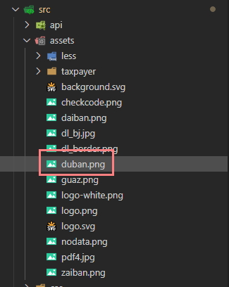
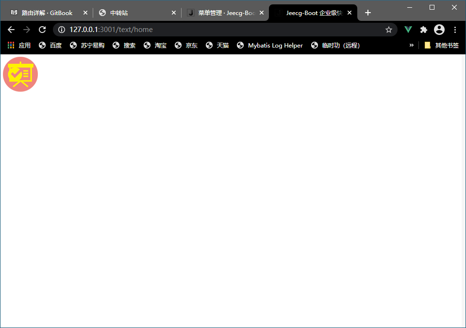
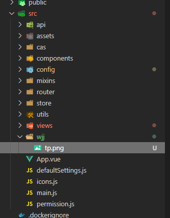

第三节：静态资源
在vue页面中如何引用静态资源（css，img，js，等，不推荐引入非vue版本的js）
静态资源放在assets或static，
资源路径前缀
| 前缀 | 路径 |
|---|---|
| @$ | src |
| @api | src/api |
| @assets | src/assets |
| @comp | src/components |
| @views | src/views |
| @layout | src/layout |
| @static | src/static |
| @mobile | src/modules/mobile |
如：想再home也显示一个静态的图片，
图片存放在

<template>
<div>
<img src="@assets/duban.png"/>
</div>
</template>
<script>
export default {
name: 'text_vue',
data () {
return {}
},
}
</script>
<style scoped>
</style>

引入css
<style scoped>
@import '~@assets/less/common.less'
</style>
在css里引入静态资源
<template>
<div>
{{targetTime}}
<br>
<router-link :to="{name:'text_list'}">跳转到list页</router-link>
<br>
<a @click="toList">跳转到list页</a>
<br>
<img src="@assets/duban.png"/>
<div class="tp" style="width:150px;"></div>
</div>
</template>
<script>
export default {
name: 'text_vue',
data () {
return {
targetTime: new Date().getTime() + 3900000
}
},
methods:{
toList(){
this.$router.push({ name: "text_list" })
},
}
}
</script>
<style scoped>
.tp{
height: 50vh;
background-image: url(~@/wjj/tp.png);
}
</style>

在css引用与在<template>中引用不一样，使用的是~@/作为根目录，